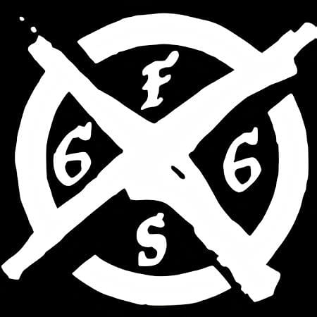
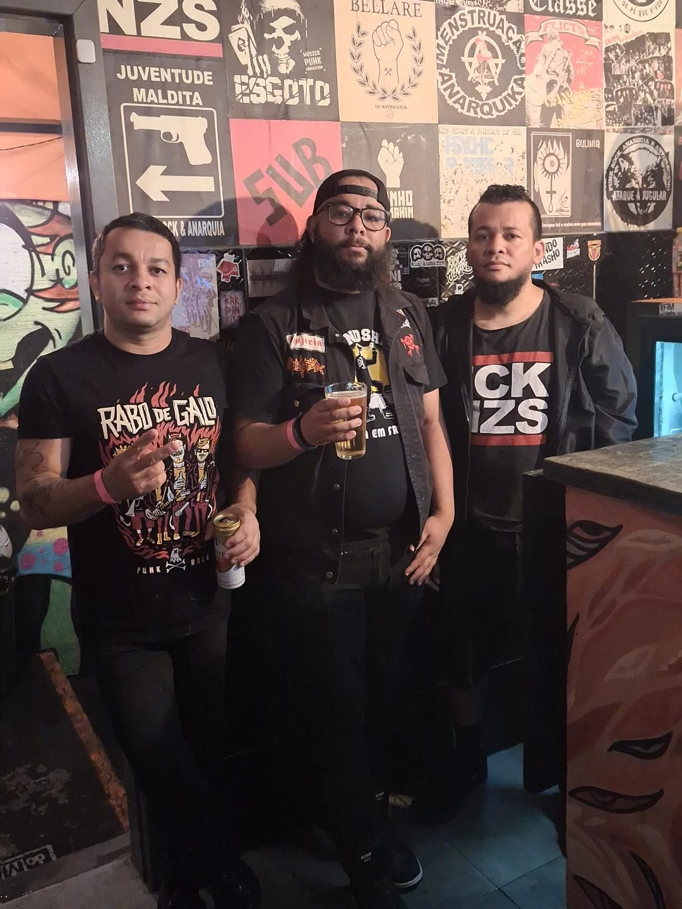
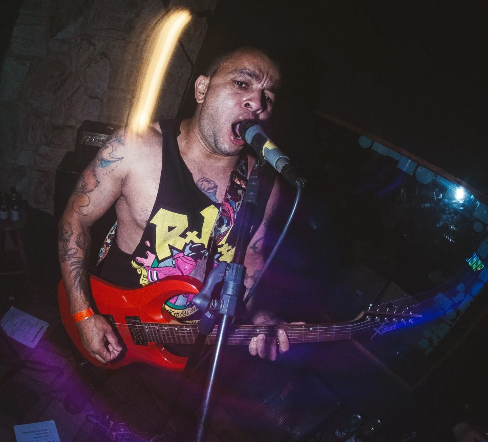
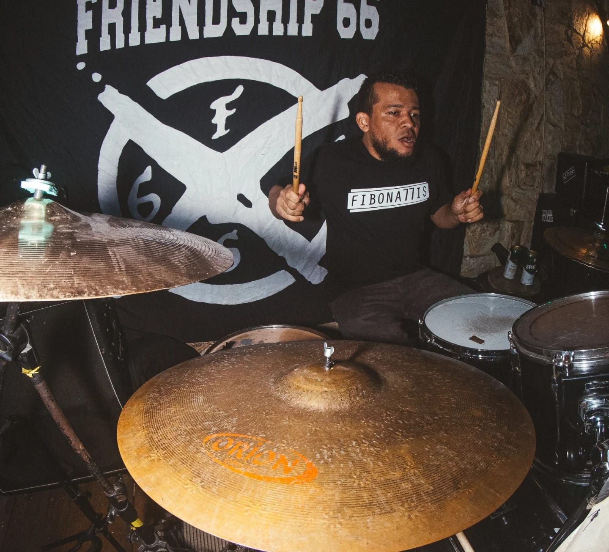
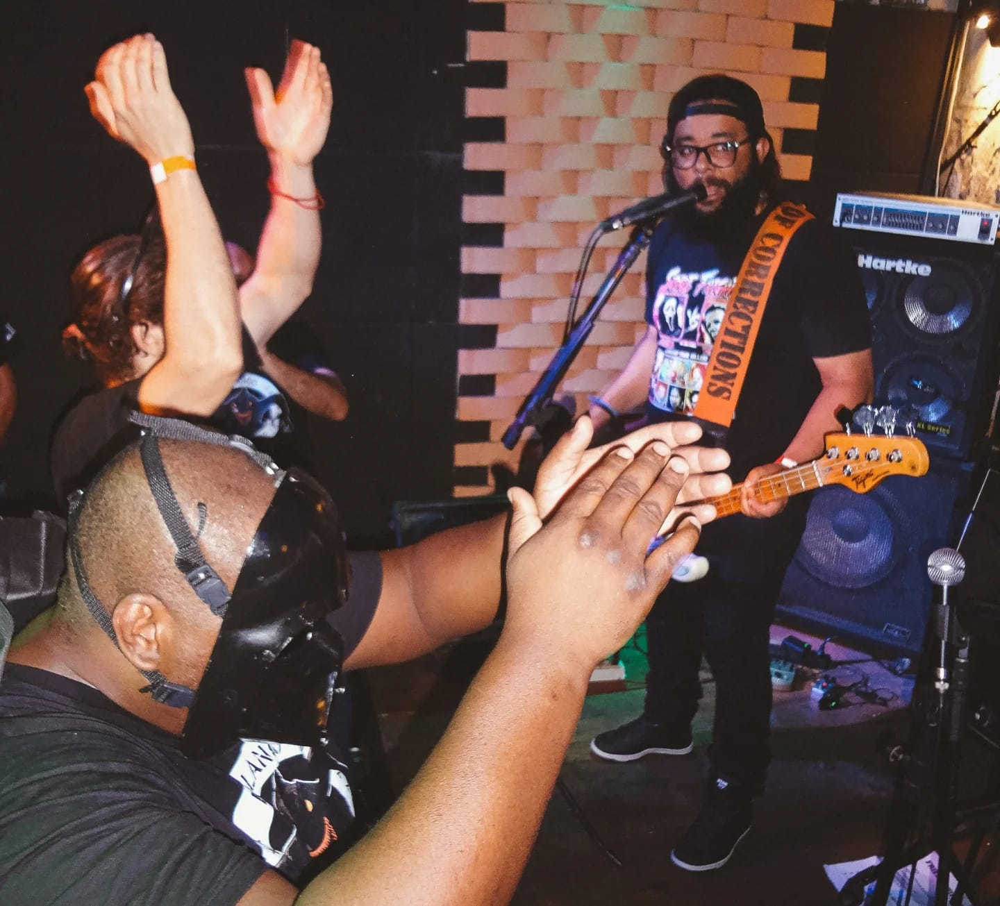

Rock Underground Brasileiro
Desde 2010, a Friendship 66 vem moldando sua trajetória no cenário do rock independente, e ao completar uma década de existência, a banda tem muito a celebrar e compartilhar com seus fãs. O grupo foi oficialmente formado nesse ano, mas a semente foi plantada em 2009, nos porões da casa do fundador, onde surgiam as primeiras composições que dariam vida a essa incrível jornada musical.
Inspirada pela cena underground pulsante dos anos 2000 no Brasil e influenciada por ícones como Ramones, Sex Pistols e 2 Minutos da Argentina, a Friendship 66 construiu sua identidade única. Suas letras, que transitam entre o cotidiano urbano e temas políticos, estabeleceram a banda como uma voz autêntica no universo do rock nacional independente.
O palco foi conquistado em 2013, quando a banda recebeu um convite de um coletivo local e fez sua estreia no Parque Gabriel Chucre em Carapicuíba. Esse evento marcou o início de uma série de apresentações regionais que consolidaram a presença da Friendship 66 no circuito underground de São Paulo. Em 2016, a banda teve a oportunidade de se apresentar no maior festival de rock de Osasco, proporcionando uma experiência única em uma grande estrutura, algo distante dos eventos underground que marcaram seus primeiros anos.
A virada de chave aconteceu com o lançamento do EP “Mentiras na TV” em 2016. Com abordagem crítica e questionadora, as faixas refletiam as preocupações sociais e políticas da banda. O EP foi gravado de forma independente, financiado pelas vendas de merchandise da banda, mostrando a autossuficiência e a determinação do grupo. O videoclipe homônimo, “Mentiras na TV”, também lançado no mesmo ano, foi uma produção do tipo “faça você mesmo”, com cenas gravadas em Carapicuíba.
Dois anos após esses marcos, Friendship 66 uniu forças com Sukinho di 10 para um projeto ousado: o CD Split “O Chão é o Limite”. Produzido de forma independente por Lau Andrade da Conspiração Records e prensado por João Bazilio Ribeiro da Ibotirama Records, o álbum contou com seis faixas inéditas, sendo três de cada banda. Uma colaboração que prometia revolucionar e influenciar outras bandas do cenário underground.
A pandemia de 2020 trouxe desafios, mas também inspirou a Friendship 66 a criar a faixa “Ruas Vazias”. Um videoclipe impactante que expressava o momento de negacionismo e omissão durante a crise do COVID-19, dedicado aos corajosos profissionais de saúde na linha de frente.
Ao atingir a marca de 10 anos em 2022, a banda decidiu eternizar sua jornada através do documentário “A História até aqui”, dirigido pela Subterrânea Filmes e roteirizado pelos próprios integrantes. O documentário aborda os momentos cruciais que deram forma ao legado da Friendship 66. Infelizmente, também registra a perda repentina e devastadora do vocalista Vilson. Contudo, a banda permanece firme, pronta para seguir adiante e entrar em estúdio em breve para a gravação de um novo EP, mantendo viva a chama do rock independente. A Friendship 66 é mais do que uma banda; é uma história de perseverança, autenticidade e paixão pelo som que faz pulsar o coração do rock underground brasileiro.



